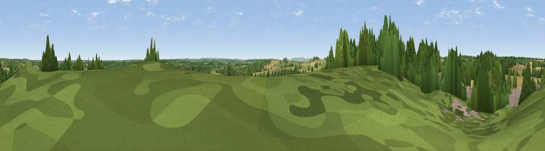

Viewpoint near Sherbourne
#39261 in England · top 88% of its area beats it · near SherbourneThe view, rendered

A 360° render of this exact spot computed from the terrain model, tree cover and land cover — summer colours, afternoon light, calibrated against photographs of famous viewpoints. Real trees, hedges and buildings will differ in detail.
The panorama
Grey silhouette: terrain skyline in each direction (720 bearings, Earth curvature and refraction included). Dashed green: skyline with trees (+15 m) and buildings (+8 m) as obstacles. Blue strip: how far the ground is visible on each bearing.
Where the view opens
Wedge length = distance to the farthest visible ground on that bearing (vegetation-aware). Rings at 10, 25 and 50 km.
What fills the view
42% grassland · 30% cropland · 26% woodland · 3% built-up
Angular shares of the visible panorama (visual magnitude), not map area. Landscape diversity 0.51 (0–1 Shannon).
Key numbers
More beautiful places nearby
The staircase of upgrades: each row has a higher view potential than everything closer. Driving times are estimates from straight-line distance, calibrated against real road routing — check an actual route before setting out.
| Place | Direction | Drive | Score |
|---|---|---|---|
| Viewpoint near Wasperton | S · 2 km | ~6 min | 46.8 |
| Viewpoint near Tiddington | SW · 6 km | ~13 min | 48.6 |
| Viewpoint near Tiddington | SW · 6 km | ~13 min | 50.7 |
| Viewpoint near Ettington | S · 10 km | ~19 min | 60.1 |
| Lodge Hill | W · 14 km | ~25 min | 64.0 |
| Viewpoint near Northend | ESE · 17 km | ~30 min | 65.3 |
| Viewpoint near Northend | ESE · 17 km | ~30 min | 66.0 |
| Viewpoint near Northend | ESE · 18 km | ~31 min | 69.7 |
52.25043, -1.63339 · source: screening · position refined by local search. Computed location — check access rights before visiting.